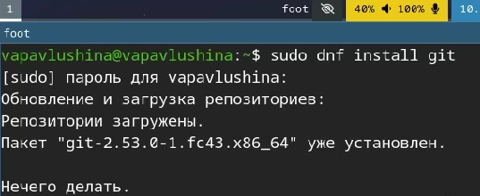
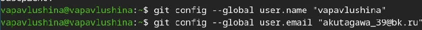
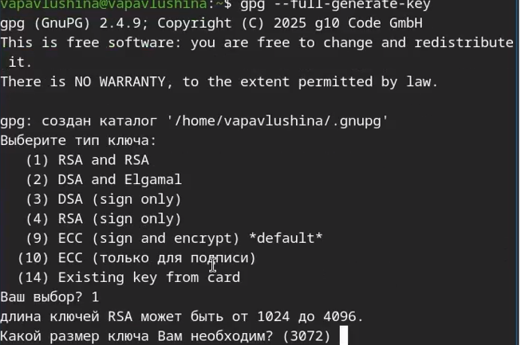
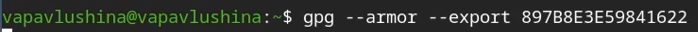
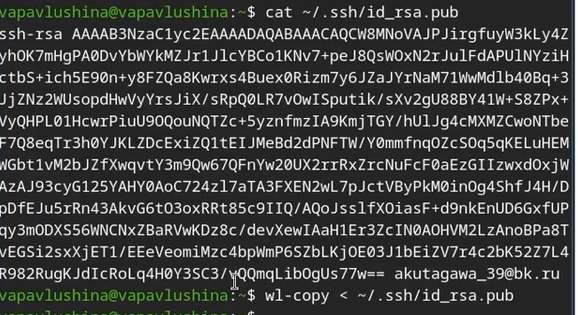
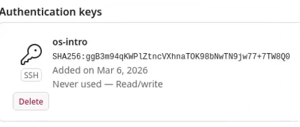
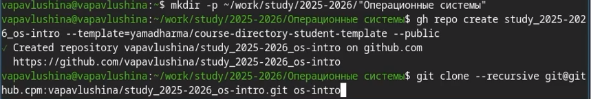
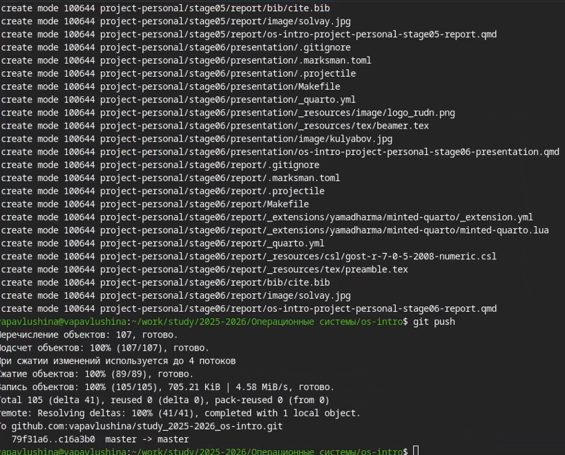

Системы контроля версий — неотъемлемая часть современной
разработки
Git является стандартом де-факто в индустрии
Правильная настройка инструментов экономит время и предотвращает
ошибки
Объект и предмет
исследования
Объект: системы контроля версий - Предмет: первоначальная настройка
Git и сопутствующих инструментов
Цели и задачи
Цель:Изучить идеологию и применение средств контроля версий и освоить
умения по работе с git.
Задания: -Создать базовую конфигурацию для работы с git. -Создать
ключ SSH. -Создать ключ PGP. -Настроить подписи git. -Зарегистрироваться
на Github. -Создать локальный каталог для выполнения заданий по
предмету.
Материалы и методы
Git — система контроля версий
GitHub — платформа для хостинга репозиториев
Утилиты: ssh-keygen, gpg, gh
Командная строка Linux
Выполнение работы
Установка программного
обеспечения
Устанавливаем git и gh.

Базовая настройка git
Устанавливаем имя пользователя и email.

Настраиваем верификацию и подписание коммитов git.
Создание ключа SSH
“Создали ключ”
Создание ключа pgp

“Генерируем ключ”
Настройка github
“Создаём аккаунт”
Добавляем pgp и ssh keys



Настройка
автоматических подписей коммитов git
“Настраиваем подпись”
Настройка gh
“Настроили gh”
Шаблон для рабочего
пространства


Выводы
Изучила идеологию и применение средств контроля версий и освоила
умения по работе с git.